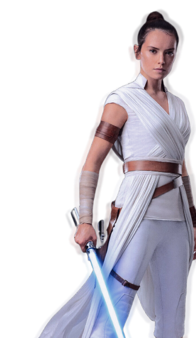

Rey Skywalker
Era uma catadora de sucata que descobriu ser sensível à Força durante sua busca ao lendário Mestre Jedi Luke Skywalker.

Era uma catadora de sucata que descobriu ser sensível à Força durante sua busca ao lendário Mestre Jedi Luke Skywalker.